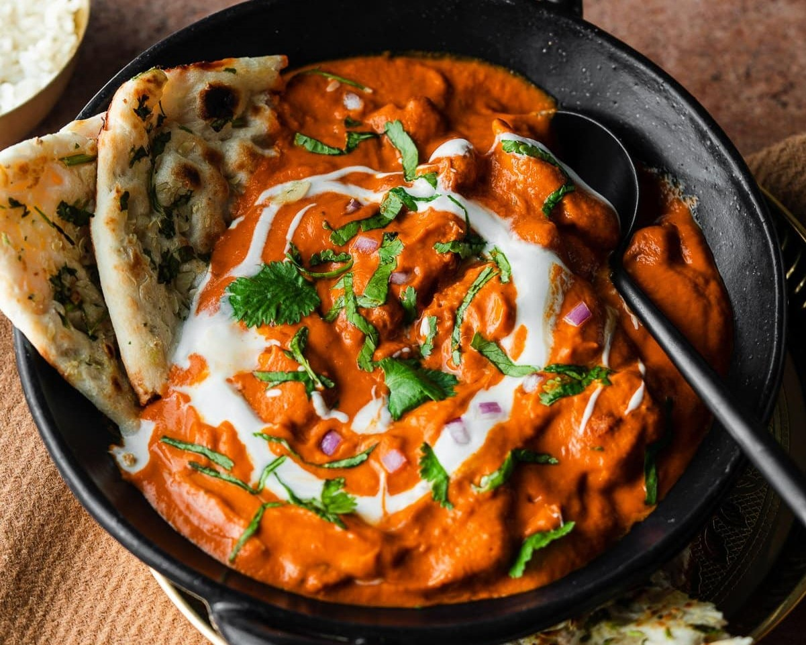

Probably the best known of all Indian dishes, murgh makhani, internationally referred to as butter chicken, is a staple dish at most Indian restaurants. The dish originated in Delhi during the 1950s, when a man named Kundan Lal Gujral opened his restaurant called Moti Mahal.
Meal prep time : 1 hour 15 minutes
Servings : 8